배포#
배포 개요#
Backend.AI는 배포(Deployments) 기능을 통해 AI 모델을 추론 서비스로 배포할 수 있도록 지원합니다. 배포는 모델을 안정적인 엔드포인트 URL 뒤에 노출하여, 엔드 유저 애플리케이션(모바일 앱, 웹 서비스 백엔드, 사내 도구 등)이 해당 엔드포인트를 호출해 추론을 수행할 수 있도록 합니다.
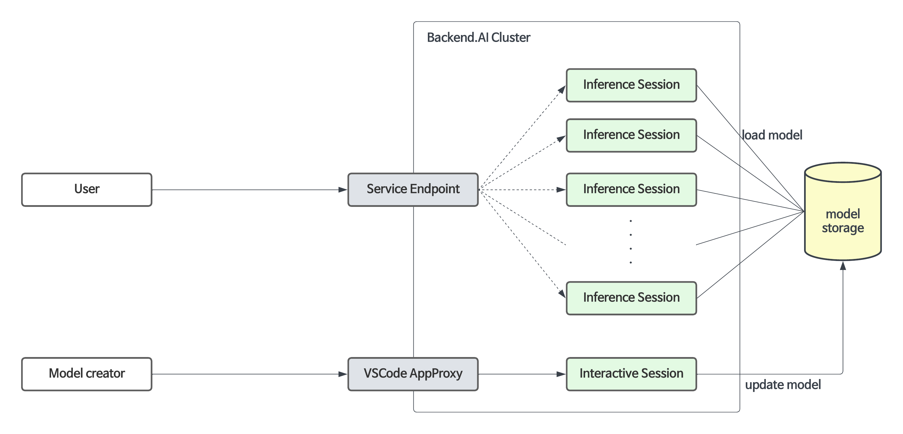
배포는 일반 연산 세션을 확장하여 자동화된 유지·보수, 복제본 스케일링, 그리고 복제본이 변경되더라도 바뀌지 않는 영구적인 엔드포인트 주소를 제공합니다. 원하는 스케일링 파라미터만 지정하면 Backend.AI가 내부의 추론 세션을 자동으로 생성, 모니터링, 종료해 주므로 세션을 직접 관리할 필요가 없습니다.
배포 페이지#
배포 페이지는 현재 프로젝트의 모든 배포 목록을 표시합니다. 사이드바 메뉴에서 배포를 클릭하여 접근할 수 있습니다.
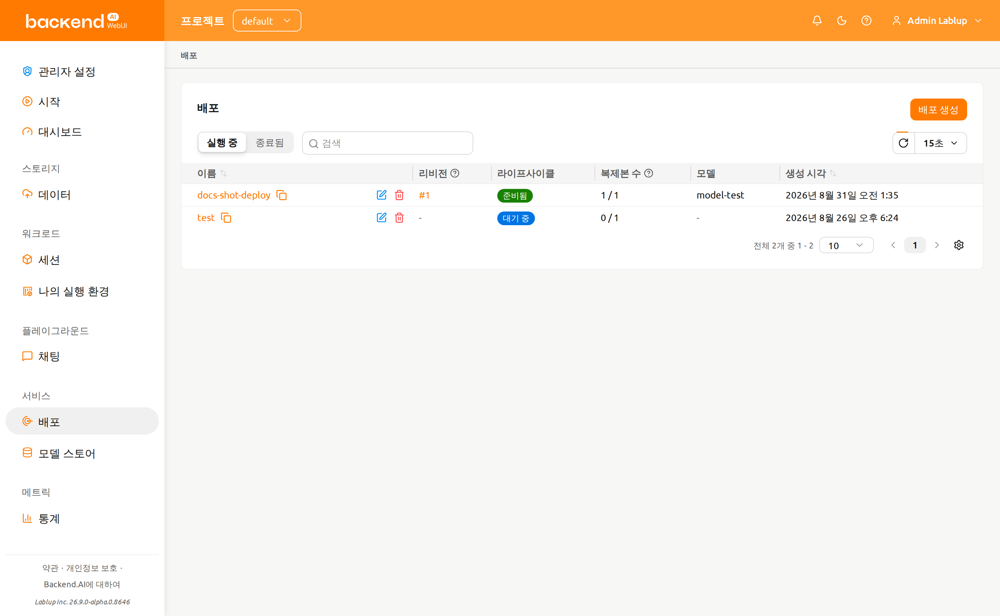
페이지 상단에서 라이프사이클 단계별로 배포를 필터링할 수 있습니다:
- 실행 중: 현재 실행 중이거나 생성 중인 배포를 표시합니다. 기본 보기입니다.
- 종료됨: 종료된 배포를 표시합니다.
배포 생성 버튼을 클릭하여 배포 생성 모달을 엽니다.
배포 생성#
배포를 생성하는 흐름은 두 단계로 나뉩니다.
- 배포 생성 — 배포의 식별 정보(이름, 공개 범위, 배포 메타데이터, 자원 그룹)만 정의하는 가벼운 컨테이너를 생성합니다.
- 리비전 추가 — 실제로 실행되는 구성(시작 명령, 환경 변수, 런타임 변형, 이미지, 자원, 모델 스토리지)을 담은 스냅샷을 추가합니다.
하나의 배포는 여러 개의 리비전을 보관할 수 있습니다. 어느 시점이든 현재 리비전(트래픽을 처리하는 리비전)은 하나뿐이며, 배포 상세 페이지의 리비전 탭에서 다른 리비전으로 전환할 수 있습니다.
배포 생성 모달#
배포 페이지에서 배포 생성 버튼을 클릭하여 배포 생성 모달을 엽니다. 이 모달에서는 배포 단위의 메타데이터만 입력하며, 이 단계에서 리비전이 함께 생성되지는 않습니다.
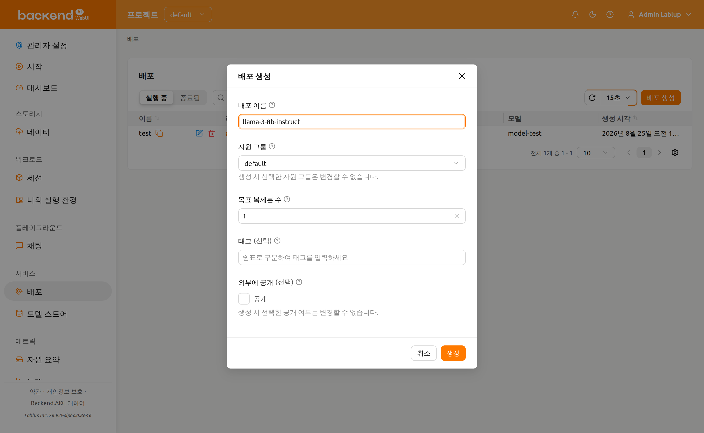
모달에는 다음과 같은 필드가 있습니다.
- 배포 이름: 대시보드, API, 엔드포인트 URL에서 배포를 식별하는 데 사용되는 고유 이름입니다.
- 자원 그룹: 배포가 실행될 자원 그룹입니다. 프로젝트에서 사용 가능한 자원 그룹이 하나뿐이면 자동으로 선택되며, 별도로 선택하지 않고도 진행할 수 있습니다.
- 목표 복제본 수: 이 배포에서 유지할 복제본 수입니다. 시스템은 활성 풀을 이 목표값에 맞춰 조정합니다.
- 태그: 배포를 정리하고 필터링하기 위한 선택적 라벨입니다. Enter 또는 쉼표로 추가합니다.
- 외부에 공개: 활성화하면 액세스 토큰 없이 엔드포인트에 접근할 수 있습니다. 비활성화하면 모든 요청에 토큰이 필요합니다. 자세한 내용은 토큰 생성 섹션을 참고하세요.
모달이 열리는 순간부터 자원 그룹 필드 아래에는 "생성 시 선택한 자원 그룹은 변경할 수 없습니다." 라는 경고 문구가, 외부에 공개 필드 아래에는 "생성 시 선택한 공개 여부는 변경할 수 없습니다." 라는 경고 문구가 표시됩니다.
자원 그룹은 리비전이 아니라 배포에 속하는 값이므로, 배포를 수정하거나 새 리비전을 추가하는 방법으로도 다른 자원 그룹으로 옮길 수 없습니다. 외부에 공개 역시 같은 방식으로 확정되며, 배포 수정 모달에서 이 체크박스는 읽기 전용이고 그 아래에 동일한 문구가 표시됩니다. 배포를 생성하기 전에 두 값을 모두 올바르게 선택하고, 다른 값이 필요하다면 배포를 새로 생성하세요.
생성을 클릭하면 배포가 생성되며, 배포 상세 페이지로 이동합니다. 첫 번째 리비전을 추가하기 전까지는 배포된 리비전이 없습니다 경고가 표시됩니다.
생성 후 배포 수준 설정(이름, 목표 복제본 수, 태그)을 변경하려면 기본 정보 카드의 수정 버튼을 클릭한 다음, 배포 수정 모달에서 값을 변경하고 저장합니다. 자원 그룹과 외부에 공개 설정은 위에서 설명한 대로 생성 시점에 고정되므로 여기서는 변경할 수 없습니다.
리비전 추가#
리비전에는 추론 서버를 실행하는 데 필요한 모든 설정(이미지, 시작 명령, 자원, 모델 마운트, 환경 변수)이 포함됩니다. 배포 상세 페이지에서 리비전 추가 버튼을 클릭하여 모달을 엽니다.
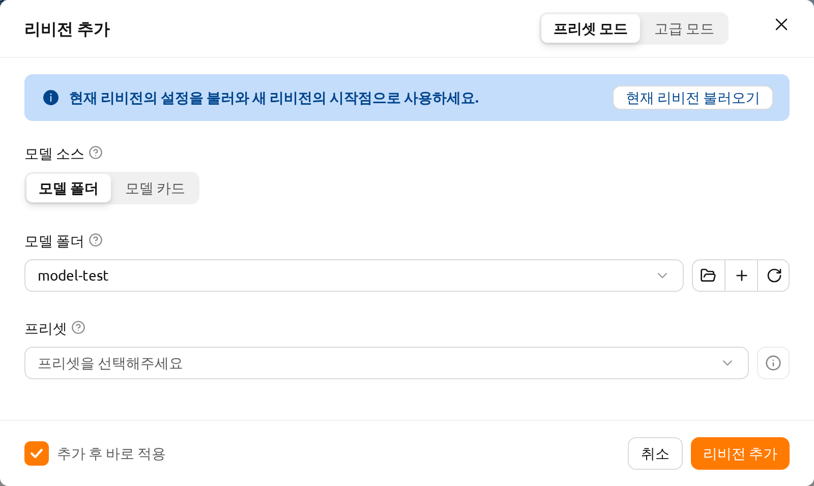
리비전 추가 모달 제목 영역의 프리셋 모드 / 고급 모드 전환기로 리비전 구성 방식을 선택합니다.
배포에 현재 리비전이 있으면 두 모드 위에 현재 리비전 불러오기 안내 배너가 표시됩니다. 현재 리비전 불러오기를 클릭하면 현재 적용 중인 리비전의 설정을 시작점으로 폼에 미리 채웁니다(필요한 경우 자동으로 고급 모드로 전환됩니다). 아직 현재 리비전이 없는 배포에서는 배너가 표시되지 않으며, 설정을 한 번 불러오면 배너는 사라집니다.
프리셋 모드#
미리 정의된 배포 프리셋으로 리비전을 빠르게 추가합니다.
- 모델 소스: 이 리비전의 모델을 어디에서 가져올지 선택합니다. 모델 폴더 또는 모델 카드 중 하나를 선택하며, 선택에 따라 아래 선택기가 바뀝니다. 소스를 변경하면 이미 선택한 모델과 프리셋 선택이 초기화됩니다.
- 모델 폴더 (모델 폴더 소스): 각 복제본에 마운트될 스토리지 폴더입니다.
- 모델 카드 (모델 카드 소스): 배포할 모델 카드입니다. 해당 카드의 모델 폴더가 각 복제본에 마운트되며, 그 카드와 호환되는 프리셋만 표시됩니다. 선택기 옆의 ⓘ 버튼을 클릭하면 선택한 카드의 모델 카드 상세 드로어가 열립니다.
- 프리셋: 배포의 자원 그룹과 호환되는 배포 프리셋입니다. 옆의 ⓘ 버튼을 클릭하면 프리셋의 전체 구성을 확인할 수 있습니다. 모델 카드 소스에서는 카드를 선택하기 전까지 "모델 카드를 먼저 선택해 주세요." 안내와 함께 선택기가 비활성화된 상태로 유지됩니다.
선택한 모델 카드에 마운트할 모델 폴더가 없으면 리비전이 생성되지 않고 "선택한 모델 소스에 마운트할 모델 폴더가 없습니다. 다른 모델 카드나 모델 폴더를 선택하세요." 오류 메시지가 표시됩니다. 다른 모델 카드를 선택하거나 소스를 다시 모델 폴더로 전환하세요.
자원 그룹에 호환되는 프리셋이 없으면 안내 메시지가 표시됩니다. 이 경우 고급 모드로 전환하여 직접 구성하세요.
고급 모드#
모든 설정을 직접 구성합니다.
폼은 다음 섹션으로 구성됩니다.
- 모델 및 런타임: 모델 폴더와 마운트 경로, 런타임 변형을 선택합니다.
vLLM/SGLang변형에서는 런타임 파라미터 패널이,Custom변형에서는 서비스 구성 섹션이 나타납니다. 런타임별 상세 필드는 아래 섹션을 참고하세요. - 헬스 체크 및 시작 전 작업: 헬스 체크와 추론 서버 시작 전에 실행할 작업을 구성합니다. 두 항목 모두 모든 런타임 변형에서 사용할 수 있습니다.
- 실행 환경: 컨테이너 이미지(실행 환경 / 버전)와 환경 변수를 설정합니다.
- 클러스터 및 리소스: CPU, 메모리, 가속기, 클러스터 모드 및 크기 등 자원을 할당합니다.
- 고급 설정 (접을 수 있음): 모델 정의 파일 경로를 지정하고, 모델 폴더 외에 추가로 마운트할 스토리지 폴더를 설정합니다.
모달 하단의 추가 후 바로 적용 체크박스를 선택하면 리비전이 생성된 직후 바로 활성화됩니다. 선택하지 않으면 비활성 상태로 저장되며, 이후 리비전 탭에서 직접 적용할 수 있습니다.
리비전 추가: 필드 참고#
아래 하위 섹션에서는 리비전 단위 필드를 자세히 설명합니다. 고급 모드에서 리비전을 수동으로 추가할 때와 각 필드가 무엇을 제어하는지 이해하고자 할 때 모두 적용됩니다.
모델 폴더 마운트#
리비전마다 하나의 모델 스토리지 폴더가 각 복제본에 마운트됩니다. 폴더 선택기 바로 아래의 필드에서 해당 폴더가 컨테이너 내부의 어느 위치에 나타날지 지정합니다.
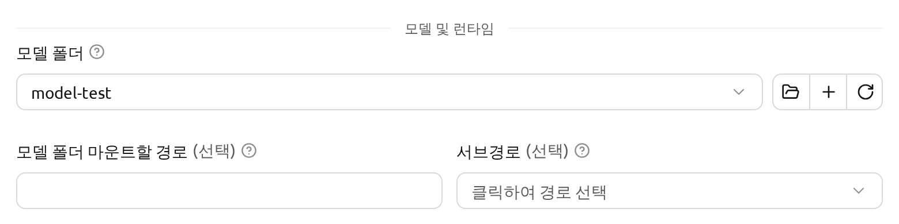
- 모델 폴더: 각 복제본에 마운트할 모델 스토리지 폴더입니다.
- 모델 폴더 마운트할 경로: 컨테이너 내부에 모델 스토리지 폴더가 마운트되는 경로입니다 (기본값:
/models). - 서브경로: 폴더 루트 대신 마운트할 모델 폴더 내부의 하위 폴더입니다. 비워 두면 폴더 루트가 마운트됩니다.
서비스 구성 (Custom 런타임만 해당)#
모델 폴더에서 설정을 읽는 런타임 변형(예: Custom)을 선택하면 런타임 선택기 아래에 서비스 구성 섹션이 나타납니다. 이 섹션은 기본적으로 펼쳐져 있으며, 추론 서버 프로세스의 시작 방식을 정의합니다.
- 실행 방식: 명령어를 실행하는 방법입니다.
- Shell: 셸(
bash -c "...")을 통해 명령어를 실행하므로 셸 연산자를 사용할 수 있습니다. 대부분의 경우 권장됩니다. - Exec: 셸을 거치지 않고 명령어를 인수 형태로 직접 실행합니다. 셸 없이 명령어를 실행해야 하는 경우(예: 셸 바이너리가 없는 이미지)에만 사용하세요.
- Shell: 셸(
- 셸: 명령어 실행에 사용할 셸 바이너리입니다(예:
/bin/bash). Shell 방식에서만 표시되며 필수 입력 항목입니다. 해당 바이너리가 컨테이너 이미지에 없으면 서비스가 시작되지 않습니다. - 명령어: 추론 서버를 실행하는 명령어입니다. 예를 들어
python -m http.server 8000. Shell 방식에서는 여러 줄 입력 상자이며, Exec 방식에서는 명령어 (argv) 라는 이름의 한 줄 입력 필드로 바뀝니다. - 포트: 추론 서버가 수신하는 컨테이너 포트입니다(2~65535).
Shell 방식에서는 명령어가 셸로 전달되므로 ;, |, &&, $VAR, 리다이렉션 같은 연산자가 터미널에서와 동일하게 해석됩니다.
chmod +x /setup.sh; vllm serve /modelsExec 방식에서는 같은 문자열이 인수 단위로 분리되어 직접 실행되므로, 이러한 연산자는 일반 텍스트로 전달됩니다. 인수는 공백으로 구분하고, 공백이 포함된 인수는 따옴표로 묶으세요(예: --name "my model"). 셸 문법이 필요하다면 명령어를 /bin/bash -c "..."로 감싸는 대신 실행 방식을 Shell 로 되돌리세요.
헬스 체크 및 시작 전 작업#
헬스 체크 활성화 와 시작 전 작업 필드는 서비스 구성 섹션 아래에 이어지며, 모든 런타임 변형에서 표시됩니다.
- 헬스 체크 활성화: 활성화하면 시스템이 추론 서버에 주기적으로 HTTP 요청을 보내 정상적으로 응답하는지 확인합니다. 비활성화된 경우(새 리비전의 기본값) 헬스 체크가 구성되지 않으며, 비정상 복제본이 자동으로 감지되지 않습니다. 운영 환경 배포에서는 활성화하는 것을 권장합니다. 헬스 체크 활성화 를 선택하면 다음 필드가 추가로 표시됩니다.
- 경로: 서비스 헬스 체크 시 호출되는 HTTP 엔드포인트 경로입니다 (기본값:
/health). - 간격: 연속된 헬스 체크 사이의 시간(초)입니다.
- 최대 재시도 횟수: 복제본이
UNHEALTHY로 표시되기 전까지 허용되는 최대 연속 실패 횟수입니다. - 최대 대기 시간: 개별 헬스 체크 요청의 타임아웃 시간(초)입니다.
- 상태 코드: 서비스가 정상임을 나타내는 HTTP 응답 상태 코드입니다.
- 초기 헬스 체크 유예 시간: 컨테이너 시작 후 헬스 체크 실패를 허용하는 유예 시간(초)입니다. 첫 성공 응답 시점에 복제본이 활성화됩니다. 로딩에 오래 걸리는 대형 모델에서는 값을 늘리세요.
- 경로: 서비스 헬스 체크 시 호출되는 HTTP 엔드포인트 경로입니다 (기본값:
- 시작 전 작업: 모델 서비스가 시작되기 전에 실행할 작업입니다. 사전 실행 동작 추가 를 클릭해 행을 추가한 뒤 동작(작업 이름, 예:
wait_for_file)과 인수 (JSON)(JSON 객체 형식의 인수, 예:{})를 입력합니다. 두 필드 모두 각 행에서 필수이며, 인수는 올바른 JSON이어야 합니다. 지원되는 작업 목록은 Backend.AI 모델 서빙에서 지원하는 서비스 동작 설명 을 참고하세요.
모델 정의 파일 경로 자체는 폼 하단의 고급 설정 패널에 있습니다. 모델 정의 파일 작성 방법은 모델 정의 파일 생성 섹션을 참고하세요.
런타임 파라미터 (vLLM / SGLang)#
vLLM 또는 SGLang 런타임 변형을 선택하면, 서비스 구성 섹션 대신 런타임 파라미터 섹션이 나타납니다. 이 섹션에서는 구성 파일을 수동으로 편집하지 않고도 서빙 프레임워크를 구성할 수 있습니다.
파라미터는 탭으로 구분된 카테고리별로 구성됩니다. 사용 가능한 탭 목록은 런타임 변형에 따라 다릅니다.
변경하지 않은 파라미터는 런타임의 기본값이 사용됩니다.
vLLM 런타임 파라미터
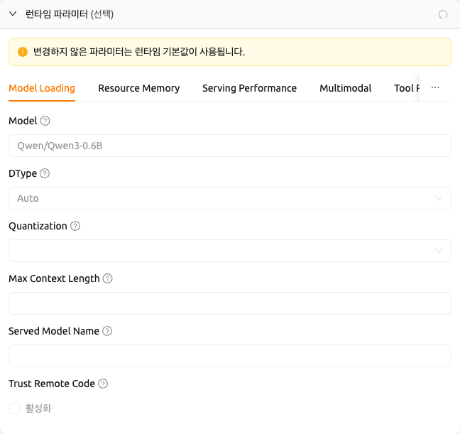
vLLM은 다음 파라미터 탭을 제공합니다: Model Loading, Resource Memory, Serving Performance, Multimodal, Tool Reasoning 등.
Model Loading 탭의 주요 필드:
- Model: 사용할 모델의 이름 또는 경로입니다.
- DType: 모델 가중치 및 연산의 데이터 타입입니다 (예:
Auto,float16,bfloat16). - Quantization: 모델 양자화 방식입니다 (예:
awq,gptq,fp8). - Max Model Length: 모델이 처리할 수 있는 최대 컨텍스트 길이(토큰 수)입니다.
- Served Model Name: API 엔드포인트에서 노출할 모델 이름입니다.
- Trust Remote Code: 모델 저장소의 커스텀 모델 코드 실행을 허용합니다.
SGLang 런타임 파라미터
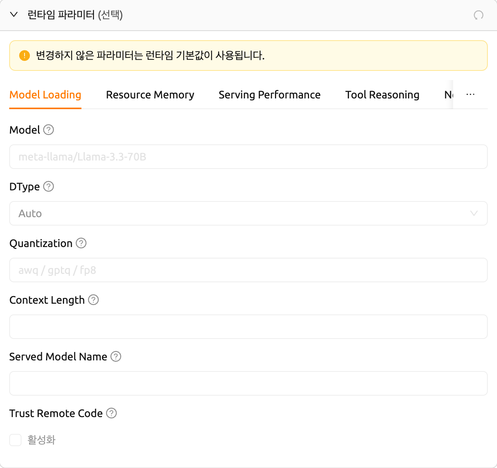
SGLang은 다음 파라미터 탭을 제공합니다: Model Loading, Resource Memory, Serving Performance, Tool Reasoning 등.
Model Loading 탭의 주요 필드:
- Model: 사용할 모델의 이름 또는 경로입니다.
- DType: 모델 가중치 및 연산의 데이터 타입입니다 (예:
Auto,float16,bfloat16). - Quantization: 모델 양자화 방식입니다 (예:
awq,gptq,fp8). - Context Length: 모델이 처리할 수 있는 최대 컨텍스트 길이입니다.
- Served Model Name: API 엔드포인트에서 노출할 모델 이름입니다.
- Trust Remote Code: 모델 저장소의 커스텀 모델 코드 실행을 허용합니다.
헬스 체크 활성화
헬스 체크 활성화 와 시작 전 작업 필드는 런타임 파라미터 섹션 아래에 위치하며, 헬스 체크 및 시작 전 작업 에서 설명한 것과 동일하게 동작합니다. Custom 변형과 마찬가지로 vLLM 및 SGLang 에서도 표시됩니다.
런타임 파라미터 외에도 vLLM 및 SGLang 런타임 변형은 환경 섹션에 다음 환경 변수를 미리 채웁니다.
- vLLM:
BACKEND_MODEL_NAME,VLLM_QUANTIZATION,VLLM_TP_SIZE(텐서 병렬화),VLLM_PP_SIZE(파이프라인 병렬화),VLLM_EXTRA_ARGS(추가 CLI 인자) - SGLang:
BACKEND_MODEL_NAME,SGLANG_QUANTIZATION,SGLANG_TP_SIZE(텐서 병렬화),SGLANG_PP_SIZE(파이프라인 병렬화),SGLANG_EXTRA_ARGS(추가 CLI 인자)
환경#
환경 섹션은 모든 런타임 변형에서 사용할 수 있습니다.
- 실행 환경 / 버전: 추론 서버에 사용할 컨테이너 이미지입니다. 런타임 변형을 선택하면 해당 런타임과 호환되는 이미지로 목록이 필터링됩니다.
- 환경 이름 (수동): 이미지 참조를 직접 입력하는 필드로, 서버에서 이미지 이름 직접 입력을 허용한 경우에만 표시됩니다. 이 필드에 값을 입력하면 실행 환경 / 버전 선택이 해제되고, 반대로 목록에서 이미지를 선택하면 이 필드가 비워집니다. 두 방식은 같은 이미지를 지정하는 두 가지 방법입니다.
- 환경 변수: 추론 서버 컨테이너에 전달되는 키/값 쌍입니다.
vLLM및SGLang의 경우 위에 나열한 런타임 전용 변수가 미리 채워집니다. 항목을 자유롭게 추가, 편집, 삭제할 수 있습니다. 변수 이름을 입력하면HF_TOKEN,WANDB_API_KEY,AWS_ACCESS_KEY_ID,AWS_SECRET_ACCESS_KEY,AWS_DEFAULT_REGION,HTTP_PROXY,HTTPS_PROXY,NO_PROXY등 자주 사용하는 환경 변수 이름이 선택한 런타임 변형의 변수와 함께 추천 목록으로 표시됩니다. 다른 행에서 이미 사용 중인 이름은 목록에서 제외됩니다. 알려진 이름을 입력하면 값 입력란에 해당 변수에 맞는 안내 문구가 표시됩니다. 예를 들어HF_TOKEN에는 "Hugging Face 액세스 토큰" 이 표시됩니다.
이미지 이름을 직접 입력하는 경우#
목록에서 선택하는 대신 환경 이름 (수동) 필드에 이미지 이름을 입력하면, 폼을 제출하는 시점에 입력한 참조를 서버에 등록된 이미지와 대조하여 일치하는 이미지로 리비전을 생성합니다.
- 레지스트리에서 사용하는 것과 동일한 형식으로 입력합니다. 예:
cr.backend.ai/stable/python:3.10-ubuntu20.04 @뒤에 아키텍처를 덧붙여 특정 아키텍처를 지정할 수 있습니다. 예:cr.backend.ai/stable/python:3.10-ubuntu20.04@aarch64아키텍처를 생략하면 매니저의 기본 아키텍처가 사용됩니다.
입력한 값과 일치하는 이미지가 없으면 리비전은 생성되지 않으며, 해당 필드에 "입력한 이미지를 찾을 수 없습니다. 등록된 이미지 참조를 입력하거나 목록에서 선택하세요." 라는 오류가 표시되고 화면이 그 필드로 이동합니다. 참조를 수정하거나, 필드를 비우고 실행 환경 / 버전 목록에서 이미지를 선택하세요.
이미지 조회는 제출 시점에 이루어지므로, 오류는 입력하는 도중이 아니라 저장 버튼을 클릭한 뒤에 표시됩니다.
클러스터 및 리소스#
클러스터 및 리소스 섹션에서 각 복제본에 할당할 컴퓨팅 리소스를 지정합니다.
- 리소스 프리셋: CPU, 메모리, 가속기 할당이 미리 구성된 프리셋입니다. 사용 가능한 프리셋은 배포의 자원 그룹에 따라 필터링됩니다. 프리셋을 선택하지 않고 수동으로 리소스(CPU, 메모리, GPU)를 구성할 수도 있습니다.
고급 설정#
고급 설정 펼침 패널을 열면 모델 정의 파일 경로를 지정하고, 모델 스토리지 폴더 외에 추가 스토리지 폴더를 마운트할 수 있습니다.
- 모델 정의 파일 경로: 모델 스토리지 폴더 내 모델 정의 파일의 경로입니다 (기본값:
model-definition.yaml).Custom처럼 모델 폴더에서 설정을 읽는 런타임 변형에서만 표시됩니다. - 추가 마운트: 추론 서버 컨테이너에 마운트할 스토리지 폴더 목록입니다. 준비 상태(
ready)의 비모델 폴더만 선택할 수 있으며, 모델 타입 폴더와 현재 선택한 모델 폴더는 목록에서 제외됩니다. 이름이.으로 시작하는 자동 마운트 폴더는 선택할 수 없고, 테이블 하단에 자동으로 마운트될 폴더 목록으로 별도 표시됩니다.
Custom 런타임 구성 파일#
모델 정의 파일 생성하기#
모델 정의 파일은 Backend.AI 시스템이 추론용 세션을 자동으로 시작, 초기화하고 필요에 따라 스케일링할 때 필요한 설정 정보를 담고 있는 파일입니다. 이 파일을 추론 서비스 엔진을 담고 있는 컨테이너 이미지와는 독립적으로 모델 타입 폴더에 저장합니다. 이를 통해 모델을 실행하는 엔진이 다양한 모델을 필요에 따라 바꿔가며 서비스할 수 있도록 하며, 모델이 변경될 때마다 컨테이너 이미지를 새로 빌드 및 배포하지 않아도 되도록 해줍니다. 네트워크 스토리지에서 직접 모델 정의와 모델 데이터를 불러오므로, 오토스케일링 시 배포 과정을 더 단순화 및 효율화할 수 있습니다.
모델 정의 파일은 다음과 같은 형식을 따릅니다.
models:
- name: "simple-http-server"
model_path: "/models"
service:
start_command:
- python
- -m
- http.server
- --directory
- /home/work
- "8000"
port: 8000
health_check:
path: /
interval: 10.0
max_retries: 10
max_wait_time: 15.0
expected_status_code: 200
initial_delay: 60.0모델 정의 파일에 대한 키-값 설명
"(필수)" 표시가 없는 필드는 선택사항입니다.
name(필수): 모델의 이름을 정의합니다.model_path(필수): 모델이 정의된 경로를 지정합니다.service: 서비스될 파일들에 대한 정보를 구성하는 항목입니다 (명령 스크립트 및 코드 포함).pre_start_actions:start_command이전에 실행되는 작업입니다. 이러한 작업들은 구성 파일 생성, 디렉토리 설정, 초기화 스크립트 실행 등을 통해 환경을 준비합니다. 작업은 정의된 순서대로 순차적으로 실행됩니다.action: 수행할 작업 유형입니다. 사용 가능한 작업 유형과 해당 파라미터는 사전 시작 작업을 참조하세요.args: 작업별 파라미터입니다. 각 작업 유형마다 다른 필수 인수가 있습니다.
start_command(필수): 배포에서 실행될 명령을 지정합니다. 문자열 또는 문자열 목록으로 지정할 수 있습니다.port(필수): 모델 서비스를 위한 컨테이너 포트입니다 (예:8000,8080).health_check: 모델 서비스의 주기적인 상태 모니터링을 위한 구성입니다. 이 설정이 구성되면, 시스템은 자동으로 서비스가 올바르게 응답하는지 확인하고 비정상 인스턴스를 트래픽 라우팅에서 제거합니다.path(필수): 상태 확인 요청을 위한 HTTP 엔드포인트 경로입니다 (예:/health,/v1/health).interval(기본값:10.0): 연속적인 상태 확인 간의 시간(초 단위)입니다.max_retries(기본값:10): 서비스를UNHEALTHY로 표시하기 전에 허용되는 연속 실패 횟수입니다. 이 임계값을 초과하기 전까지 서비스는 계속 트래픽을 받습니다.max_wait_time(기본값:15.0): 각 상태 확인 HTTP 요청의 타임아웃 시간(초 단위)입니다. 이 시간 내에 응답이 없으면 확인은 실패로 간주됩니다.expected_status_code(기본값:200): 정상 응답을 나타내는 HTTP 상태 코드입니다. 일반적인 값:200(OK),204(No Content).initial_delay(기본값:60.0): 컨테이너 생성 후 상태 확인을 시작하기 전에 대기하는 시간(초 단위)입니다. 이는 모델 로딩, GPU 초기화 및 서비스 워밍업에 시간을 제공합니다. 대형 모델의 경우 더 높은 값을 설정하세요 (예: 70B+ LLM의 경우300.0).
상태 확인 동작 이해하기
상태 확인 시스템은 개별 모델 서비스 컨테이너를 모니터링하고, 상태에 따라 트래픽 라우팅을 자동으로 관리합니다.
① AppProxy: 트래픽 라우팅 제어
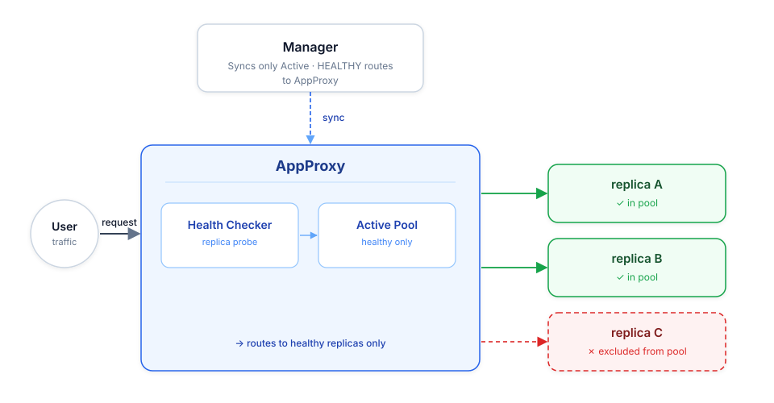
② Manager: 상태 관리 및 eviction
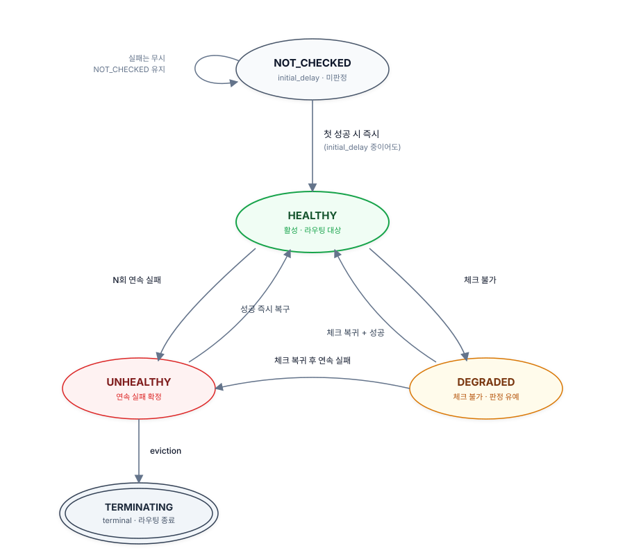
내부 상태 정보(트래픽 라우팅에 사용됨)는 사용자 인터페이스에 표시되는 상태와 즉시 동기화되지 않을 수 있습니다.
UNHEALTHY가 되기까지의 시간:
초기 시작 시:
initial_delay + interval × (max_retries + 1)기본값 예시: 60 + 10 × 11 = 170초 (약 3분)
운영 중(정상 상태 이후):
interval × (max_retries + 1)기본값 예시: 10 × 11 = 110초 (약 2분)
Backend.AI 배포에서 지원되는 서비스 작업 설명
write_file: 지정된 파일 이름으로 파일을 생성하고 내용을 추가하는 작업입니다. 기본 액세스 권한은644입니다.arg/filename: 파일 이름 지정body: 파일에 추가할 내용 지정mode: 파일의 액세스 권한 지정append: 파일 내용의 덮어쓰기 또는 추가를True또는False로 설정
write_tempfile: 임시 파일 이름(.py)으로 파일을 생성하고 내용을 추가하는 작업입니다. 모드 값이 지정되지 않은 경우 기본 액세스 권한은644입니다.body: 파일에 추가할 내용 지정mode: 파일의 액세스 권한 지정
run_command: 명령을 실행한 결과가 오류를 포함하여 다음 형식으로 반환됩니다 (out: 명령 실행 출력,err: 명령 실행 중 오류 발생 시 오류 메시지)args/command: 실행할 명령을 배열로 지정 (예:python3 -m http.server 8080명령은 ["python3", "-m", "http.server", "8080"]이 됩니다)
mkdir: 입력 경로로 디렉토리를 생성하는 작업입니다args/path: 디렉토리를 생성할 경로 지정
log: 입력 메시지로 로그를 출력하는 작업입니다args/message: 로그에 표시할 메시지 지정debug: 디버그 모드인 경우True, 그렇지 않으면False로 설정
모델 정의 파일을 모델 타입 폴더에 업로드#
모델 정의 파일(model-definition.yml)을 모델 타입 폴더에 업로드하려면
가상 폴더를 생성해야 합니다. 가상 폴더를 생성할 때 기본 general 타입 대신
model 타입을 선택하세요. 폴더 생성 방법에 대한 지침은 데이터 페이지의
스토리지 폴더 생성 섹션을 참조하세요.
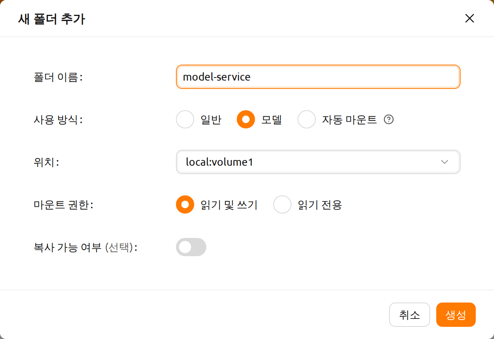
폴더를 생성한 후, 데이터 페이지에서 MODELS 탭을 선택하고
최근에 생성한 모델 타입 폴더 아이콘을 클릭하여 폴더 탐색기를 열고
모델 정의 파일을 업로드합니다.
폴더 탐색기 사용 방법에 대한 자세한 내용은
폴더 탐색 섹션을 참조하세요.
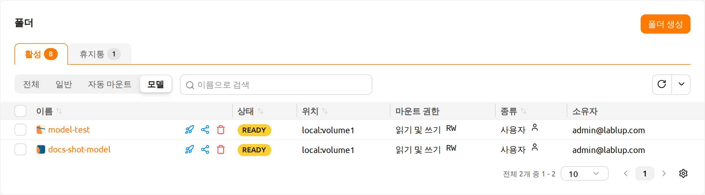
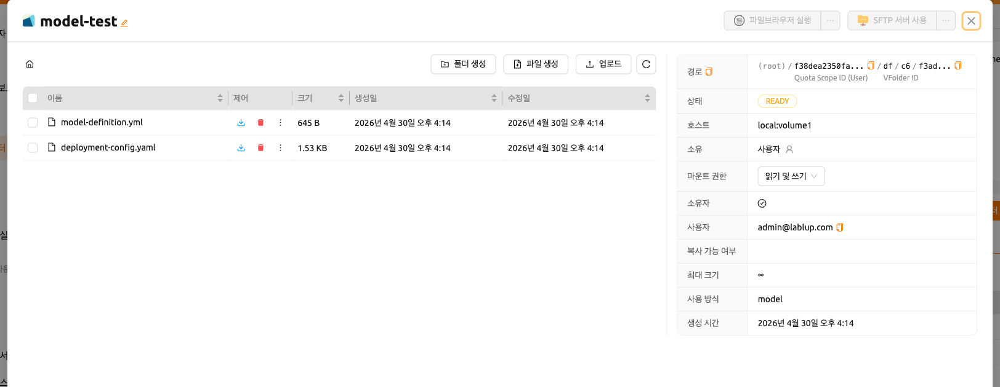
배포 사전 구성 (deployment-config.yaml)#
모델 폴더에 deployment-config.yaml 파일을 배치하여 모델에서 배포를 생성할 때 사용하는 리소스, 환경 및 런타임 설정을 미리 구성할 수 있습니다. 파일이 존재하면 해당 값들이 기본값으로 사용되며, 배포 시점에 설정하는 모든 항목(리비전 추가 양식 또는 API 요청)이 이를 재정의합니다.
같은 폴더에 있는 service-definition.toml(TOML 형식) 파일도 폴백으로 읽히지만 더 이상 권장되지 않습니다 — 모델 폴더에는 deployment-config.yaml을 사용하세요.
deployment-config.yaml은 선택 사항이며 배포를 막지 않습니다. 파일의 존재 여부와 관계없이 모델을 배포할 수 있으며, 누락되거나 형식이 잘못된 파일은 단순히 건너뜁니다. 모델 및 추론 서버를 설명하는 선택 사항인 model-definition.yaml과 함께 사용하면 관리자는 모델과 함께 합리적인 기본값을 제공할 수 있습니다.
값은 우선순위가 가장 낮은 것부터 가장 높은 것 순으로 3단계 재정의 계층을 통해 결정됩니다.
- 루트 수준 기본값 — 모든 런타임 변형에 적용됩니다.
- 런타임 변형 섹션(예:
vllm,sglang,tgi) — 해당 변형에 한해 개별 필드만 재정의합니다. - 배포 시점 입력(리비전 추가 양식 / API 요청) — 모든 항목을 재정의합니다.
environment:
image: "example.com/model-server:latest"
architecture: "x86_64"
resource_slots:
cpu: 4
mem: "16gb"
"cuda.shares": "0.5"
environ:
MODEL_NAME: "example-model-name"
resource_opts:
shmem: "8g"
vllm:
environment:
image: "vllm-optimized:0.4.0"
resource_slots:
cpu: 8
"cuda.device": 2필드 참조
environment: 추론 서버의 컨테이너 이미지 및 아키텍처입니다.image: 컨테이너 이미지의 전체 경로입니다(예:example.com/model-server:latest).architecture: 이미지의 CPU 아키텍처입니다(예:x86_64,aarch64).
resource_slots: 각 복제본에 할당되는 연산 리소스입니다.cpu: CPU 코어 수입니다(예:4,8).mem: 단위 접미사가 붙은 메모리 양입니다(예:"16gb")."cuda.shares"/"cuda.device": 분할 또는 전체 GPU 할당입니다. 점을 포함하는 키는 따옴표로 감쌉니다.
environ: 추론 서버 컨테이너로 전달되는 환경 변수입니다. 루트 값과 변형 값이 병합됩니다.resource_opts:shmem(공유 메모리 크기)과 같은 추가 리소스 옵션입니다.
vLLM 배포의 경우 루트 기본값이 vllm 섹션과 병합되며(변형 필드가 우선), 배포 시점 입력이 둘 다를 재정의합니다. 변형 섹션에 나열된 필드만 재정의되고, 나머지는 모두 루트 수준으로 폴백됩니다.
빠른 배포#
프리셋 기반 빠른 배포를 사용하면 별도의 설정 파일 없이 배포를 생성할 수 있습니다. 다음 두 가지 진입점에서 빠른 배포를 시작할 수 있습니다.
- 모델 스토어에서 사전 구성된 모델 카드를 탐색하고
배포버튼을 클릭하면 프리셋 기반으로 바로 배포할 수 있습니다. - 데이터 페이지의 모델 탭에서 모델 폴더의
서비스로 배포버튼을 클릭하면 프리셋으로 새 배포 생성 모달이 열립니다. 프리셋과 자원 그룹을 선택하면 별도의 설정 없이 바로 배포됩니다.
전체 모델 배포 흐름은 모델 스토어 섹션을 참고하세요.
배포 상세 페이지#
배포 목록에서 배포 이름을 클릭하면 배포에 대한 상세 정보를 볼 수 있습니다.
배포 알림#
배포 상세 페이지는 배포의 현재 상태에 따라 페이지 상단에 상황별 알림 배너를 표시합니다.
배포가 준비되었습니다: 배포 상태가
HEALTHY일 때 표시됩니다. 페이지를 떠나지 않고 모델을 테스트할 수 있도록 LLM 채팅 테스트 인터페이스로 이동하는 채팅으로 테스트하기 버튼이 포함됩니다.비공개 배포입니다. 엔드포인트에 접근하려면 액세스 토큰이 필요합니다.: 외부에 공개 옵션이 비활성화되어 있고, 엔드포인트 URL이 발급되었으며, 아직 액세스 토큰이 하나도 없을 때 표시됩니다. 배너에서 바로 액세스 토큰 생성 대화 상자를 여는 액세스 토큰 추가 버튼이 포함되며, 첫 토큰을 생성하면 배너는 사라집니다. 자세한 내용은 토큰 생성을 참고하세요.
배포된 리비전이 없습니다. 리비전을 추가하여 서비스를 활성화하세요.: 배포에 현재 리비전이 없을 때 표시됩니다.
리비전 추가를 클릭하여 첫 번째 리비전을 만들고 서비스를 활성화합니다.서비스를 준비하고 있습니다: 배포가 생성 중이거나 상태가 전환 중일 때 표시됩니다. 서비스가 아직 요청을 처리할 준비가 되지 않았음을 나타냅니다.
이 모델 서비스는 다른 프로젝트에 속해 있습니다: 배포가 현재 선택된 프로젝트와 다른 프로젝트에 속할 때 표시됩니다. 이 알림이 표시되는 동안
수정버튼은 비활성화됩니다. 알림의 프로젝트 전환 버튼을 클릭하여 올바른 프로젝트로 전환하고 배포를 관리할 수 있습니다.
기본 정보#
기본 정보 카드에는 배포의 메타데이터가 표시됩니다.
- 라이프사이클: 배포 상태 태그입니다. 상태 태그 옆에 스케줄링 기록 링크 버튼이 표시되며, 클릭하면 이 배포에 대한 스케줄링 이벤트 기록을 모달로 확인할 수 있습니다.
- 배포 ID: 배포의 고유 식별자입니다.
- 프로젝트 / 도메인: 배포가 속한 프로젝트와 도메인입니다.
- 자원 그룹: 배포가 실행되는 자원 그룹입니다. 배포 생성 시 한 번 설정되며 리비전과 무관하게 고정됩니다.
- 엔드포인트 URL: 배포에 액세스하기 위한 URL입니다.
- 공개 범위: 공개 / 비공개 태그로 표시됩니다. 공개는 액세스 토큰 없이 엔드포인트에 접근할 수 있음을 의미하며, 비공개는 호출자가 유효한 액세스 토큰을 함께 보내야 함을 의미합니다.
- 목표 복제본 수: 배포가 유지하려는 복제본 수입니다.
- 태그: 배포에 부여된 태그 목록입니다.
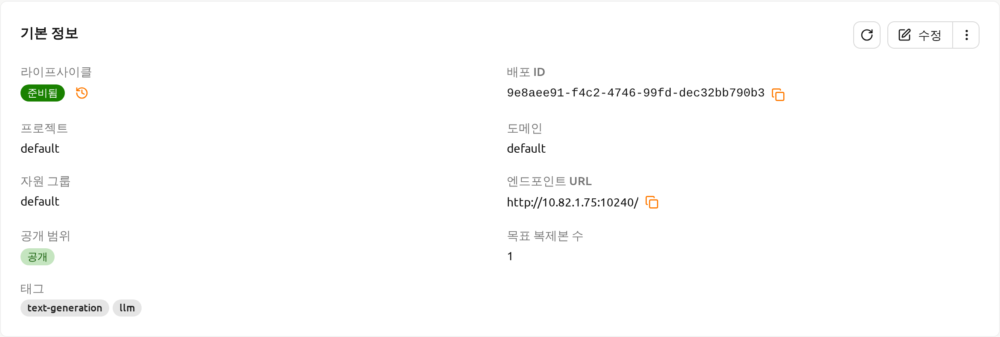
더보기 메뉴 (수정 및 삭제)#
기본 정보 카드 헤더에는 새로 고침 버튼, 수정 버튼, 더보기 메뉴가 있습니다. 수정 버튼을 클릭하면 배포 생성 모달에서 설명한 배포 수정 모달이 열립니다. 더보기 메뉴에는 현재 배포 삭제 동작이 포함됩니다.
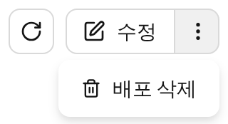
스케줄링 기록#
상태 태그 옆의 스케줄링 기록 링크 버튼을 클릭하면 배포 스케줄링 기록 모달이 열립니다. 해당 배포에 기록된 스케줄링 이벤트가 최신순으로 표시되고 속성 필터 바(ID, 단계, 결과, 이전 상태, 이후 상태, 오류 코드, 메시지, 생성일, 업데이트일)와 새로 고침 버튼도 있습니다.
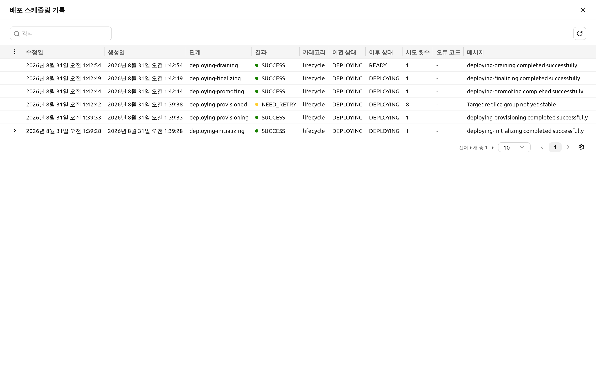
세부단계가 기록된 이벤트에는 행 왼쪽에 확장 화살표가 표시됩니다. 이를 클릭하면 해당 단계의 세부단계가 한 행에 하나씩 표시되는 간결한 인라인 표가 열리며, 다음 컬럼으로 구성됩니다.
- 세부단계: 세부단계의 이름입니다.
- 결과: 세부단계의 결과로, 색상으로 구분된 마커로 표시됩니다.
- 소요 시간: 세부단계에 걸린 시간입니다(예:
120 ms,1.35 s). - 시간: 세부단계가 시작된 시각으로, 밀리초까지 표시됩니다.
- 오류 코드: 세부단계에 기록된 오류 코드이며, 없으면
-로 표시됩니다. - 메시지: 세부단계의 상세 내용이나 오류 문구로, 한 줄로 축약되어 표시됩니다.
복제본 탭에서 여는 복제본 스케줄링 기록 모달도 동일한 표를 사용합니다. 복제본을 참고하세요.
리비전 탭#
배포 상세 페이지의 리비전 카드에는 현재 리비전, 리비전 히스토리, 감사 로그 세 개의 탭이 있습니다. 카드 상단의 리비전 추가 버튼은 모든 탭에서 사용할 수 있으며, 리비전 추가 모달을 엽니다(리비전 추가 참고).
현재 리비전 탭#
현재 리비전 탭은 현재 활성 상태로 트래픽을 처리 중인 리비전의 전체 설정을 표시합니다.
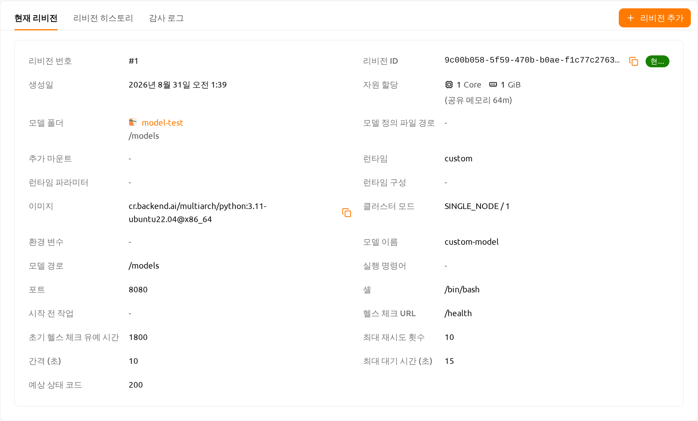
다음 필드가 표시됩니다:
- 리비전 번호: 자동 할당된 순서 번호입니다(예: #3).
- 리비전 ID: 이 리비전의 UUID입니다.
- 생성일
- 자원 할당: 각 복제본의 자원 할당(CPU, 메모리, 가속기)입니다.
- 모델 폴더: 각 복제본에 마운트된 모델 폴더로, 링크와 함께 모델 폴더 마운트할 경로가 표시됩니다. 하위 폴더를 마운트한 리비전에서는
서브경로: <값>줄도 함께 표시됩니다. - 모델 정의 파일 경로: 모델 폴더 내 모델 정의 파일 경로입니다.
- 추가 마운트: 각 복제본에 마운트된 추가 스토리지 폴더입니다.
- 런타임: 서빙 런타임입니다(예:
vLLM,SGLang,Custom). - 런타임 파라미터: 이 리비전에 구성된 런타임 변형 프리셋 파라미터 값입니다(예: DType: float32, Quantization: awq). 프리셋 파라미터 값이 구성된
vLLM또는SGLang리비전에서만 표시됩니다.Custom런타임이나 프리셋 값이 없는 리비전에서는 대시(-)로 표시됩니다. - 런타임 구성:
vLLM또는SGLang런타임에서 추가 설정이 존재하는 경우 JSON 형태로 표시됩니다. - 이미지: 복제본 실행에 사용되는 컨테이너 이미지입니다.
- 클러스터 모드: 각 복제본 컴퓨트 세션의 클러스터링 구성입니다(모드 / 크기).
- 환경 변수: 컨테이너에 주입되는 키-값 쌍으로, 셸 스크립트 블록으로 표시됩니다.
모델 정의 파일에 모델이 정의된 경우 다음 필드도 표시됩니다:
- 모델 이름, 모델 경로, 시작 명령어, 포트, 셸, 시작 전 작업, 헬스 체크 URL, 초기 헬스 체크 유예 시간, 최대 재시도 횟수, 간격 (s), 최대 대기 시간 (s), 예상 상태 코드
적용 진행 중 상태
다른 리비전이 적용 중인 동안 현재 리비전 탭에는 "N 리비전을 적용 중입니다." 알림이 표시됩니다. 알림의 리비전 보기 버튼을 클릭하면 현재 적용 중인 리비전의 상세 드로어가 열립니다. 탭은 적용이 완료될 때까지 5초마다 자동으로 새로 고침됩니다.
빈 상태
아직 배포된 리비전이 없는 경우 탭에는 "배포된 리비전이 없습니다. 리비전을 추가하여 서비스를 활성화하세요." 가 표시됩니다.
리비전 히스토리 탭#
리비전 히스토리 탭은 배포에 추가된 모든 리비전을 최신순으로 표시합니다.
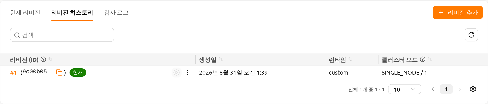
테이블에는 다음 컬럼이 포함됩니다:
- 리비전 (ID): 리비전 번호와 UUID입니다. 리비전 번호는 증가하는 정수이며, 숫자가 낮을수록 이전 리비전입니다. 리비전 번호를 클릭하면 리비전 상세 드로어가 열립니다.
- 생성일
- 런타임: 이 리비전에 사용된 서빙 런타임입니다(예:
vLLM,SGLang,Custom). - 클러스터 모드: "모드 / 크기" 형식의 클러스터링 구성입니다. 컬럼 헤더에 마우스를 올리면 설명을 확인할 수 있습니다.
기본적으로 숨겨져 있지만 컬럼 설정에서 활성화할 수 있는 컬럼:
- 모델 버전, 이미지, 모델 폴더
리비전 적용 및 기타 동작
각 행에는 적용 버튼과 더보기 메뉴가 있습니다.
적용: 클릭하면 확인 대화상자가 열립니다. 확인하면 선택한 리비전이 현재 리비전이 되고, 배포는 새 설정으로 트래픽을 처리하기 시작합니다. 이전 리비전은 히스토리에 보존됩니다.
이 리비전 기반으로 리비전 생성: 더보기 메뉴에서 선택할 수 있습니다. 해당 리비전의 설정을 미리 채운 상태로 리비전 추가 모달을 열어 빠르게 수정·재배포할 수 있습니다.
초록색 현재 태그는 현재 활성 리비전을 표시합니다.
노란색 적용 중 태그(로딩 스피너 포함)는 적용 중인 리비전을 표시합니다.
적용 버튼은 현재 활성 리비전과 적용 중인 리비전에 대해 비활성화됩니다. 배포가 중지된 상태이거나 적용 또는 롤백이 이미 진행 중인 경우에도 사용할 수 없습니다.
행의 리비전 번호를 클릭하면 해당 리비전의 전체 설정을 보여주는 리비전 상세 드로어가 열립니다. 드로어에도 적용 버튼과 이 리비전 기반으로 리비전 생성 버튼이 있으며, 표와 동일한 조건에서 적용 버튼이 비활성화됩니다.
런타임 파라미터 필드는 vLLM 및 SGLang 리비전의 리비전 상세 드로어에도 표시되며, 현재 리비전 탭과 동일한 프리셋 파라미터 값을 보여줍니다.
감사 로그 탭#
감사 로그 탭은 이 배포에 대해 수행된 모든 작업의 시간 순 기록을 표시합니다. 누가 언제 배포를 변경했는지 추적하는 데 활용합니다.
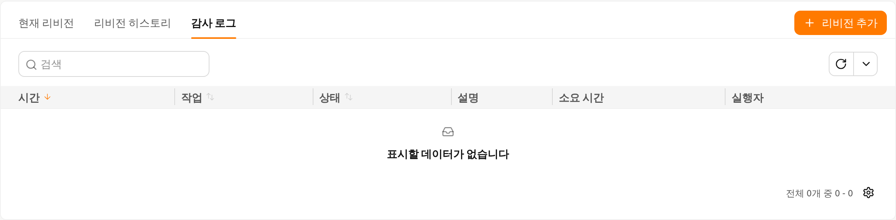
복제본#
복제본 탭은 배포를 구성하는 라우팅 노드를 보여줍니다. 탭 상단의 실행 중 / 종료됨 라디오 컨트롤로 항목을 필터링합니다.
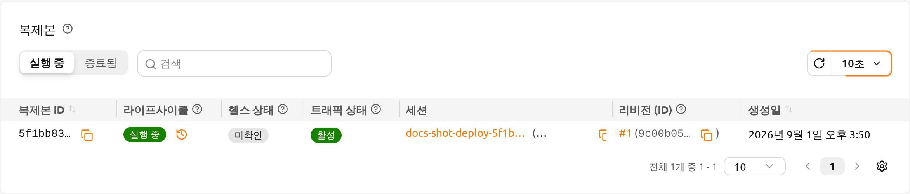
- 실행 중: 현재 프로비저닝 중이거나 실행 중인, 또는 활성 상태의 복제본을 표시합니다.
- 종료됨: 라이프사이클이 종료된 복제본을 표시합니다.
각 복제본 행에는 서로 독립적인 세 가지 상태 필드가 표시됩니다. 세 필드는 서로 다른 축을 나타내므로 함께 읽어야 합니다. 예를 들어 복제본의 라이프사이클은 실행 중이면서 헬스 상태는 아직 대기 중일 수 있습니다.
- 라이프사이클 상태: 복제본이 라이프사이클의 어느 단계에 있는지를 나타냅니다(예: 프로비저닝 중, 준비 중, 실행 중, 종료 중, 종료됨). 준비 중 단계에서 복제본은 초기 헬스 체크 유예 시간 안에 있습니다. 즉 시작되는 중이며 첫 번째 헬스 체크 성공을 기다립니다. 이 구간에서는 헬스 체크 실패가 허용되며, 첫 성공 시 실행 중으로 전환되고 구간이 끝날 때까지 한 번도 성공하지 못하면 종료됩니다. 컬럼 헤더에는 라이프사이클로 표시됩니다.
- 헬스 상태: 복제본 프로세스의 현재 헬스 상태입니다(정상, 비정상, 저하됨, 대기 중).
- 대기 중은 아직 첫 헬스 체크가 완료되지 않았음을 의미합니다. 복제본은 대개 준비 중 유예 시간 안에 있습니다. 그 자체로 오류는 아니며, 복제본의 현재 단계는 라이프사이클 상태를 보고 확인합니다.
- 트래픽 상태: 복제본이 현재 요청을 처리 중인지 여부입니다. 복제본은 헬스 상태와 무관하게 트래픽에서 제외될 수 있으므로(예: 수동으로 비활성화한 경우) 트래픽을 헬스 상태에 합치지 않고 별도의 상태로 표시합니다.
세 가지 상태는 서로 독립적인 축입니다. 준비 중 라이프사이클 단계에서 복제본은 초기 헬스 체크 유예 시간 안에 있으며, 첫 체크가 완료되기 전까지 헬스 상태는 대개 대기 중으로 표시됩니다. 이는 그 자체로 문제를 나타내지 않습니다.
세션 컬럼에서 세션 이름을 클릭하면 세션 상세 드로어가 열리고, 리비전(ID) 컬럼에서 리비전 번호를 클릭하면 리비전 상세 드로어가 열립니다.
라이프사이클 컬럼의 상태 태그 옆에는 기록 아이콘 버튼이 있습니다. 클릭하면 해당 복제본의 복제본 스케줄링 기록 모달이 열리며, 복제본의 스케줄링 이벤트 기록을 날짜 범위, 상태 등으로 필터링하여 확인할 수 있습니다.
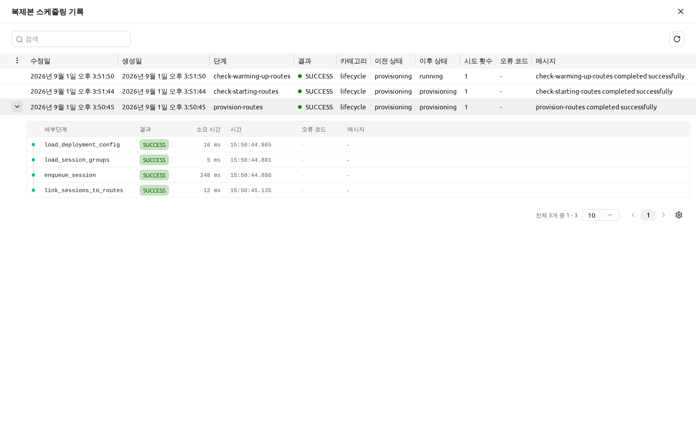
복제본에서 오류가 발생한 경우 행의 오류 표시를 클릭하면 JSON 뷰어 모달이 열리며, 원시 오류 데이터를 표시합니다. 개별 복제본의 문제를 진단할 때 유용합니다.
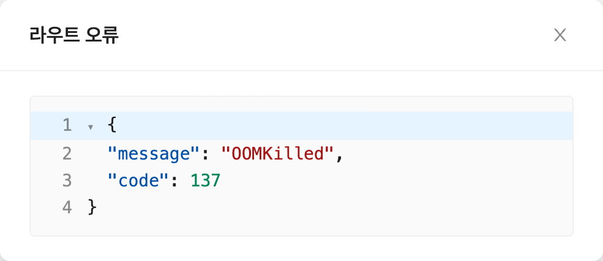
오토스케일링 규칙#
오토스케일링 규칙(Auto Scaling Rules)은 실시간 메트릭을 기반으로 모델 서비스의 복제본 수를 자동으로 증감시킵니다. 이를 통해 낮은 사용량일 때는 리소스를 절약하고, 높은 사용량일 때는 요청 지연이나 실패를 방지할 수 있습니다.
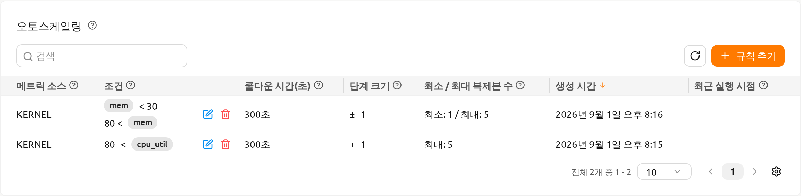
규칙 목록에서는 다음을 제공합니다:
- 생성 시간(Created At)과 최근 실행 시점(Last Triggered) 날짜-시간 범위로 규칙을 필터링할 수 있는 속성 필터 바.
- 서버 측 페이지네이션.
- 메트릭 소스(Metric Source), 조건(Condition), 쿨다운 초(Cooldown Sec.), 단계 크기(Step Size), 최소 / 최대 복제본 수(Min / Max Replicas), 생성 시간(Created At), 최근 실행 시점(Last Triggered) 컬럼. 단계 크기 컬럼은 설정한 조건에서 도출된 방향에 따라
+,−,±부호가 자동으로 표시됩니다. - 각 행의 조건 요약 옆에 표시되는 행별 편집 및 삭제 아이콘.
규칙 추가 버튼을 클릭하면 오토스케일링 규칙 추가 편집기가 열립니다. 기존 규칙을 수정하려면 해당 행의 편집 아이콘을 클릭하세요. 규칙 값이 미리 채워진 상태로 오토스케일링 규칙 수정 편집기가 열립니다. 편집기에는 다음 필드가 순서대로 포함됩니다:
메트릭 소스(Metric Source):
Kernel또는Prometheus중 하나를 선택합니다.메트릭 이름(Metric Name):
Kernel의 경우 메트릭 이름을 입력합니다.cpu_util,mem,net_rx,net_tx와 같은 일반적인 메트릭이 자동 완성 제안으로 제공되며, 사용자 정의 이름을 자유롭게 입력할 수도 있습니다.메트릭 이름 프리셋(Metric Name (Prometheus Preset)): 메트릭 소스가
Prometheus일 때만 표시됩니다. 드롭다운에서 프리셋을 선택하면 프리셋의 메트릭 이름, 쿼리 템플릿, 그리고 (정의된 경우) 쿨다운 초(Cooldown Sec.)가 자동으로 채워집니다.조건(Condition): 스케일링 방향을 선택하는 세그먼트 컨트롤입니다. 세 가지 옵션이 있습니다.
- 스케일 인: 메트릭이 임계값 아래로 떨어지면 복제본을 줄입니다.
Metric < [임계값]조건을 설정합니다. - 스케일 아웃: 메트릭이 임계값 위로 올라가면 복제본을 늘립니다.
Metric > [임계값]조건을 설정합니다. - 스케일 인 & 아웃: 메트릭이 설정한 범위를 벗어나는 방향에 따라 자동으로 축소 또는 확장합니다.
Metric < Min Threshold또는Metric > Max Threshold조건을 설정합니다.
- 스케일 인: 메트릭이 임계값 아래로 떨어지면 복제본을 줄입니다.
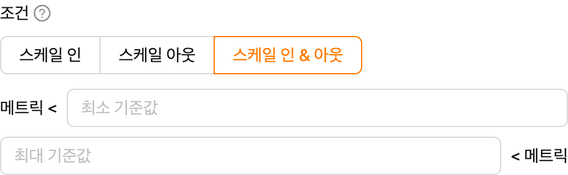
단계 크기(Step Size): 스케일링 이벤트마다 추가하거나 제거할 복제본 수를 지정하는 양의 정수입니다. 선택한 조건(스케일 인 / 스케일 아웃 / 스케일 인 & 아웃)에 따라
-,+,±부호가 자동으로 표시됩니다.- 최솟값 임계값만 설정:
[metric] < [minThreshold]조건이 되면 스케일 인(Scale In)됩니다. - 최댓값 임계값만 설정:
[metric] > [maxThreshold]조건이 되면 스케일 아웃(Scale Out)됩니다. - 둘 다 설정:
[metric] < [minThreshold]이면 스케일 인되고,[metric] > [maxThreshold]이면 스케일 아웃됩니다.
- 최솟값 임계값만 설정:
쿨다운 초(Cooldown Sec.): 스케일링 이벤트 이후 다음 평가까지 대기하는 시간(초 단위)입니다.
최소 복제본 수(Min Replicas) 및 최대 복제본 수(Max Replicas): 오토스케일링이 복제본 수에 대해 강제하는 하한과 상한입니다. 오토스케일링은 복제본 수를 최소 복제본 수 아래로 줄이거나 최대 복제본 수 위로 늘리지 않습니다.
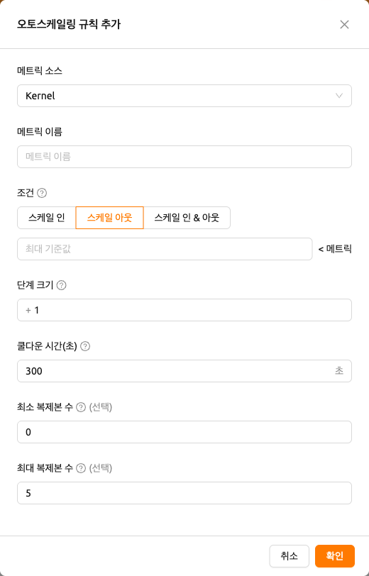
토큰 생성#
배포 상태가 HEALTHY가 되면 배포 목록에서 해당 배포 이름을 클릭하여 배포 상세 페이지를 엽니다. 기본 정보 카드에서 엔드포인트 URL을 확인할 수 있습니다. 외부에 공개가 활성화된 경우 최종 사용자는 토큰 없이 배포에 접근할 수 있습니다. 비활성화된 경우 아래 설명에 따라 토큰을 생성하세요.
액세스 토큰은 배포 상세 페이지 하단의 액세스 토큰 카드에서 관리합니다. 카드 제목 옆의 ⓘ 아이콘에 마우스를 올리면 "이 배포의 엔드포인트에 API 요청을 인증하기 위한 액세스 토큰을 관리합니다." 라는 설명이 표시됩니다.
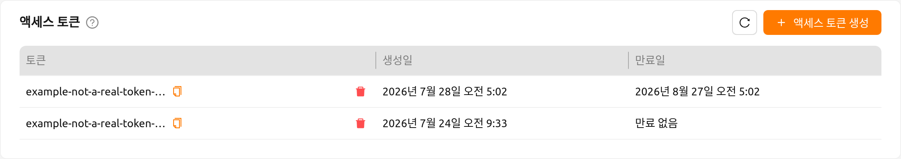
액세스 토큰 생성#
- 카드 헤더의
액세스 토큰 생성버튼을 클릭합니다. 페이지 상단의 비공개 배포 배너에 있는 액세스 토큰 추가 버튼을 클릭해도 동일한 대화 상자가 열립니다. - 토큰의 만료일을 선택합니다.
7일,30일,90일: 지금부터 해당 일수 뒤에 만료됩니다. 기본값은7일입니다.- 만료일 직접 설정: 날짜·시간 선택기가 나타나 만료 시점을 직접 지정할 수 있습니다. 지정한 시점은 현재보다 미래여야 합니다.
- 만료 없음: 만료일을 먼 미래 날짜(
2099년 12월 31일)로 설정하여 사실상 만료되지 않는 토큰을 생성합니다. 이후 토큰 대화 상자, 액세스 토큰 목록, 채팅 토큰 선택기에는 "만료 없음"이라는 문구 대신 이 날짜가 표시됩니다.
액세스 토큰 생성을 클릭하여 토큰을 발급합니다.
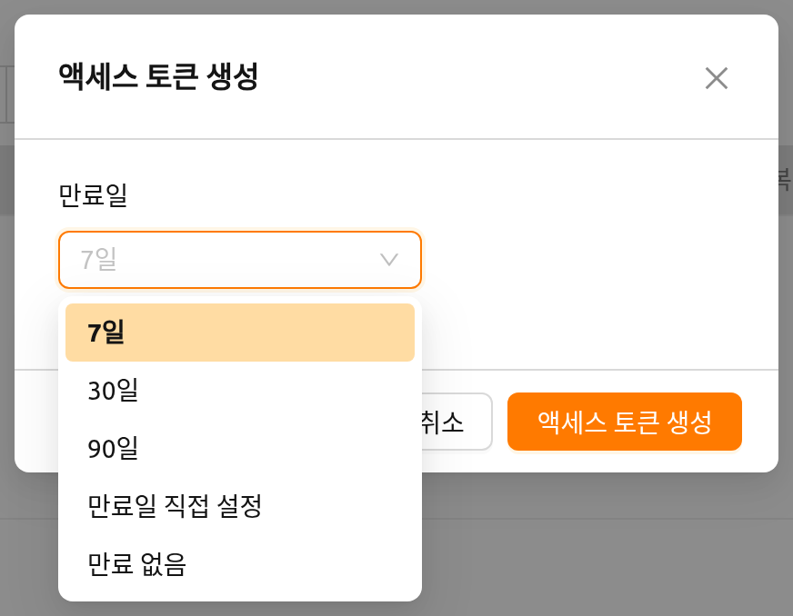
매니저가 아직 네트워크 엔드포인트를 발급하지 않았다면
액세스 토큰 생성버튼은 비활성화되며, 툴팁에 "아직 네트워크 엔드포인트가 발급되지 않았습니다." 라고 표시됩니다. 본인이 소유하지 않은 배포에서는 "배포 소유자만 액세스 토큰을 관리할 수 있습니다.", 중지 중이거나 더 이상 활성 상태가 아닌 배포에서는 "배포가 중지 중이거나 더 이상 활성 상태가 아닙니다." 라고 표시되며 버튼이 비활성화됩니다. 이 두 조건에서는 토큰 삭제도 비활성화됩니다.
토큰이 발급되면 토큰 대화 상자가 열려 토큰 값과 복사 버튼, 그리고 선택한 만료일을 한 번 보여줍니다. 이 대화 상자에서 토큰을 복사하거나, 이후 목록에서 복사할 수 있습니다.
액세스 토큰 목록#
카드에는 이 배포에 발급된 모든 액세스 토큰이 최신순으로 표시됩니다.
- 토큰: 토큰 값입니다. 축약되어 표시되며 복사 버튼도 함께 있습니다. 같은 셀의 삭제 아이콘으로 토큰을 삭제할 수 있습니다.
- 생성일: 토큰이 발급된 시점입니다.
- 만료일: 토큰이 만료되는 시점입니다. 만료 없음으로 생성한 토큰은
2099년 12월 31일로 표시됩니다.
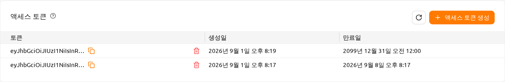
토큰은 Authorization 요청 헤더로 전달합니다.
| Key | Value |
|---|---|
| Content-Type | application/json |
| Authorization | BackendAI <token> |
액세스 토큰 삭제#
토큰 행의 삭제 아이콘을 클릭합니다. 액세스 토큰 삭제 대화 상자가 열리면 확인을 위해 삭제를 입력해야 하며, 입력한 값이 일치할 때까지 확인 버튼은 비활성화됩니다.
액세스 토큰 삭제는 되돌릴 수 없으며 즉시 적용됩니다. 해당 토큰을 계속 사용하는 클라이언트는 인증에 실패하게 됩니다.
배포 종료#
배포가 더 이상 필요하지 않으면 종료하는 것이 좋습니다. 배포를 종료하려면 기본 정보 카드의 더보기 메뉴를 열고 배포 삭제를 선택합니다. 유형 확인 모달이 나타나면 배포 이름을 입력하여 영구 삭제 버튼을 활성화합니다. 종료된 배포는 삭제됨 필터 뷰에 표시됩니다.
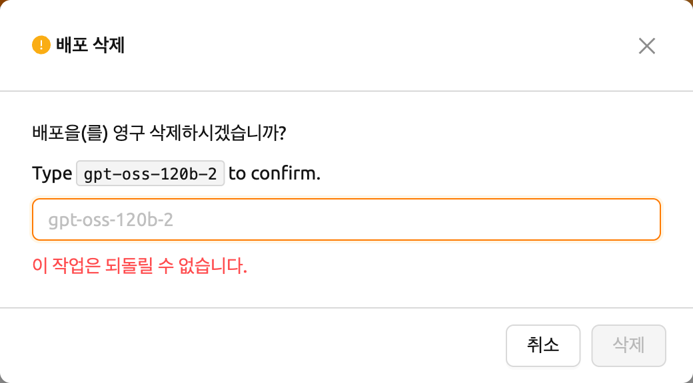
배포에 접근하기#
배포에 접근할 수 있도록 배포 URL을 최종 사용자와 공유합니다. 외부에 공개가 활성화된 경우 배포 상세 페이지의 서비스 엔드포인트 URL을 그대로 공유할 수 있습니다. 비공개 배포의 경우 URL과 액세스 토큰을 함께 공유합니다.
API 요청 보내기#
다음은 curl 명령을 사용하여 배포가 정상 응답하는지 확인하는 간단한 예시입니다:
export API_TOKEN="<token>"
export MODEL_SERVICE_ENDPOINT="<model-service-endpoint>"
curl -H "Content-Type: application/json" -X GET -H "Authorization: BackendAI $API_TOKEN" "$MODEL_SERVICE_ENDPOINT"기본적으로, 엔드 유저는 엔드포인트에 액세스할 수 있는 네트워크에 있어야 합니다. 서비스가 폐쇄된 네트워크에서 생성된 경우, 해당 폐쇄된 네트워크 내에서 액세스할 수 있는 엔드 유저만 서비스에 액세스할 수 있습니다.
LLM 채팅 테스트#
대형 언어 모델(LLM) 서비스를 생성한 경우, 실시간으로 LLM을 테스트할 수 있습니다.
배포가 준비되면 배포 상세 페이지 상단의 배포가 준비되었습니다 배너에 채팅으로 테스트하기 버튼이 나타납니다. 이 버튼을 클릭하여 테스트를 시작합니다.
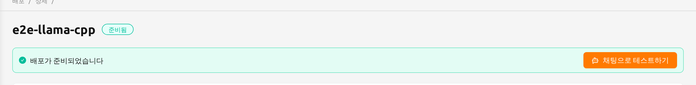
생성한 모델이 자동으로 선택된 채팅 페이지로 리디렉션되며, 여기서 바로 LLM 모델을 테스트할 수 있습니다. 채팅 기능에 대한 자세한 내용은 채팅 페이지를 참조하세요.
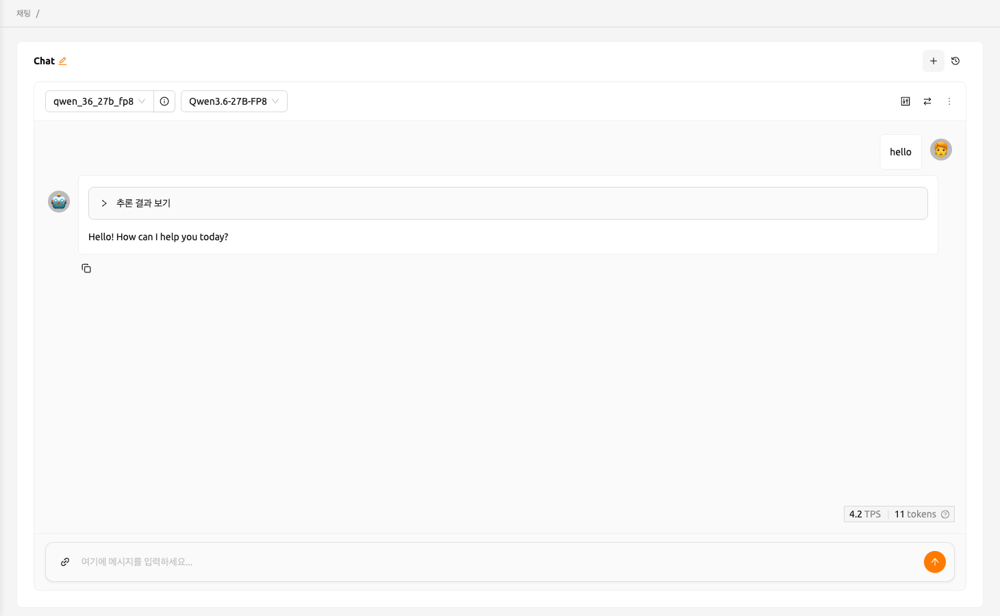
채팅 페이지에서 토큰 선택하기#
채팅 페이지가 Backend.AI 배포에 연결되어 있으면, 토큰 입력란은 일반 텍스트 입력창이 아니라 해당 배포의 액세스 토큰 목록을 보여주는 선택기로 표시됩니다.
- 각 항목에는 토큰의 마지막 6자리가 코드 형태로 표시되고, 그 옆에 만료일(예:
~ 2026년 8월 26일, 만료 없음으로 생성한 토큰은~ 2099년 12월 31일)이 함께 표시됩니다. 모든 토큰은 동일한 JWT 헤더로 시작하므로, 실제로 서로를 구분해 주는 부분은 끝부분입니다. 항목에 마우스를 올리면 생성 시각 → 만료 시각 전체를 확인할 수 있습니다. - 만료된 토큰은 표시되지 않습니다. 아직 유효한 토큰만 목록에 나타납니다.
- 입력란이 비어 있으면 가장 최근에 생성된 유효한 토큰이 자동으로 선택됩니다. 사용자가 직접 선택을 해제한 경우에는 다시 채워지지 않습니다.
- 입력란 옆의 톱니바퀴 아이콘(액세스 토큰 설정)을 클릭하면 해당 배포의 액세스 토큰 영역으로 이동하여 새 토큰을 발급할 수 있습니다. 돌아오면 목록이 다시 로드되므로 방금 생성한 토큰을 바로 선택할 수 있습니다.
배포에 유효한 토큰이 하나도 없으면 선택기는 비어 있습니다. 토큰 생성을 참고하여 먼저 토큰을 발급하세요.
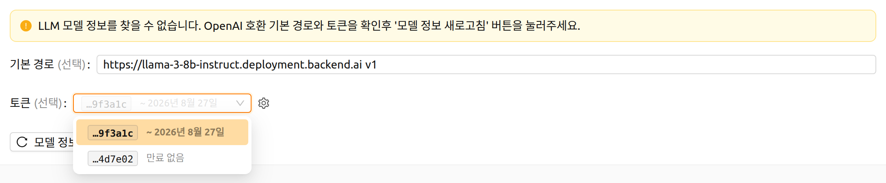
API 연결에 문제가 발생하면, 채팅 페이지에 모델 설정을 수동으로 구성할 수 있는 옵션이 표시됩니다. 모델을 사용하려면 다음 정보가 필요합니다:
- 기본 경로 (선택사항): 모델이 위치한 서버의 기본 URL입니다. 버전 정보를 포함해야 합니다. 예를 들어, OpenAI API를 사용할 때는 https://api.openai.com/v1을 입력해야 합니다.
- 토큰 (선택사항): 모델 서비스에 액세스하기 위한 인증 키입니다. 토큰은 Backend.AI뿐만 아니라 다양한 서비스에서 생성할 수 있습니다. 형식과 생성 프로세스는 서비스에 따라 다를 수 있습니다. 자세한 내용은 항상 특정 서비스의 가이드를 참조하세요. 예를 들어, Backend.AI에서 생성된 서비스를 사용할 때는 토큰 생성 방법에 대한 지침은 토큰 생성 섹션을 참조하세요.
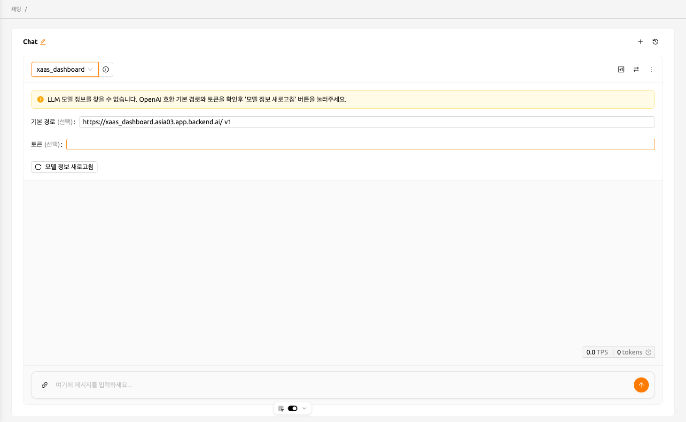
모델 스토어#
모델 스토어(Model Store)는 사전 구성된 모델을 탐색, 검색 및 배포할 수 있는 카드 기반 갤러리를 제공합니다. 사이드바 메뉴에서 모델 스토어에 접근할 수 있습니다.
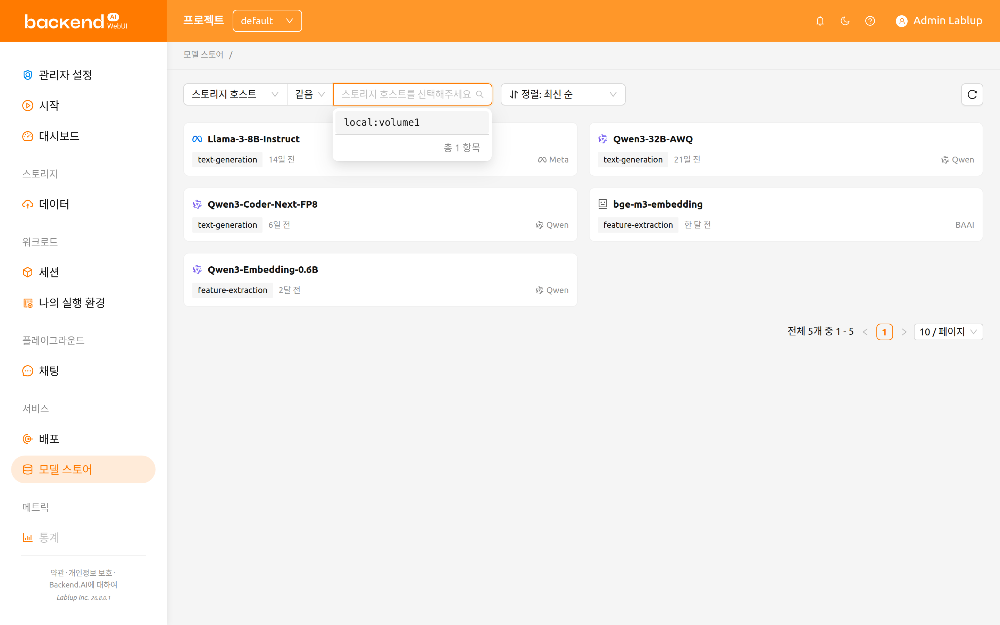
모델 탐색 및 검색#
페이지 상단은 필터 및 정렬 레이아웃을 사용합니다:
속성 필터 바: 조건을 하나 이상 추가하여 카드 목록을 좁힐 수 있습니다. 사용할 수 있는 속성은 두 가지입니다.
- 모델 이름: 이름으로 모델 카드를 검색합니다.
- 스토리지 호스트: 모델 폴더가 위치한 스토리지 호스트로 카드를 필터링합니다. 호스트 이름을 직접 입력하는 대신 서버에 등록된 스토리지 호스트 목록에서 선택하며, 선택하는 즉시 필터 조건으로 추가됩니다. 해당 호스트만 보려면
equals, 해당 호스트를 제외하려면not equals연산자를 사용합니다.
정렬(Sort): 결과 정렬 방식을 선택합니다. 사용 가능한 옵션은
이름 (A→Z),이름 (Z→A),오래된 순,최신 순입니다.새로 고침(Refresh): 새로 고침 버튼을 클릭하여 카드 목록을 다시 로드합니다.
호스트를 직접 입력하지 않고 목록에서 선택하므로, 호스트 이름을 잘못 입력해 결과가 비어 버리는 일이 없습니다. 조건은
AND로 결합되므로 이름 조건과 스토리지 호스트 조건을 함께 사용할 수 있습니다.
모델 목록은 자동으로 현재 도메인의 MODEL_STORE 프로젝트로 범위가 지정됩니다. 별도의 도메인 필터는 없으며, 이 페이지에 표시되는 모든 카드는 이미 해당 도메인에 속합니다.
각 카드에는 모델 브랜드 아이콘, 제목(제목이 설정되지 않은 경우 이름), 태스크(Task) 태그, 상대 생성 시간, 그리고 아이콘과 함께 작가(Author)가 표시됩니다. 현재 프로젝트에 호환 가능한 프리셋이 없는 카드는 50% 투명도로 표시됩니다. 이러한 카드를 열어 상세 정보를 볼 수는 있지만, 배포(Deploy) 버튼은 비활성화되고 Drawer에 호환 가능한 프리셋이 없습니다. 이 모델은 배포할 수 없습니다. 라는 오류 알림이 표시됩니다.
서버에 MODEL_STORE 프로젝트가 설정되어 있지 않으면, 페이지에는 관리자에게 문의하라는 안내와 함께 모델 스토어 프로젝트를 찾을 수 없습니다 메시지가 표시됩니다. 필터와 일치하는 모델 카드가 없으면 모델을 찾을 수 없습니다라고 표시됩니다.
목록은 하단에서 페이지네이션됩니다. 페이지 크기는 10, 20, 50개 항목 중에서 변경할 수 있습니다.
모델 카드 상세 정보#
카드를 클릭하면 페이지 오른쪽에 모델 카드 Drawer가 열립니다. Drawer 상단에는 모델 제목과 설명이 표시되고, 그 다음 태스크, 카테고리, 라벨, 라이선스 태그가 이어지며, 다음 항목을 포함한 상세 목록이 표시됩니다:
- 작가(Author)
- 아키텍처(Architecture)
- 프레임워크(Framework) (각 프레임워크는 아이콘과 함께 표시)
- 버전(Version)
- 생성 시간(Created) 및 마지막 수정(Last Modified) 타임스탬프
- 모델 폴더(Model Folder): 모델 스토리지 폴더의 폴더 탐색기를 여는 클릭 가능한 링크
- 최소 리소스(Min Resource): 최소 리소스 요구 사항(CPU, 메모리, GPU)
모델 카드에 README가 포함된 경우, Drawer 하단에 README.md 카드로 렌더링됩니다.

모델 배포#
Drawer 헤더의 배포(Deploy) 버튼을 클릭하여 모델을 서비스로 배포합니다. 배포 흐름은 다음 두 가지 방식 중 하나로 동작합니다:
자동 배포: 모델에 사용 가능한 프리셋이 정확히 하나 있고 현재 프로젝트에 접근 가능한 자원 그룹이 정확히 하나 있으면, 모달을 표시하지 않고 배포가 조용히 생성됩니다. 엔드포인트가 쿼리 가능해진 후 해당 배포 상세 페이지로 이동합니다.
모델 배포 모달(Deploy Model): 그렇지 않은 경우, 모델 배포 모달이 다음 필수 필드와 함께 열립니다.
- 프리셋(Preset): 사용 가능한 자원 프리셋의 그룹화된 드롭다운입니다. 프리셋이 여러 런타임 변형에 걸쳐 있는 경우 옵션은 런타임 변형 이름별로 그룹화되고, 그렇지 않은 경우 평면 목록으로 표시됩니다.
- 자원 그룹(Resource Group): 서비스가 실행될 자원 그룹입니다.
모달의
배포(Deploy)버튼을 클릭하여 배포를 시작합니다. 모델이 배포되었음을 확인하는 성공 토스트가 표시되고, 배포 상세 페이지로 이동합니다.

선택한 모델에 현재 프로젝트와 호환되는 프리셋이 없으면 Drawer의 배포(Deploy) 버튼이
비활성화되며, 호환되는 프리셋이 제공될 때까지 배포가 차단됩니다.